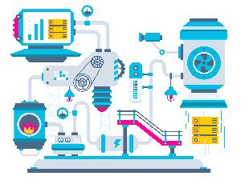

1. Web Development - Back-end
Back-End-ul de obicei constă în trei părți: un server, o aplicație de interfață și o bază de date. Rolul principal al acestuia este cel de management de conținut. Cum anume sunt introduse paginile și textele pentru un website de prezentare? Cum sunt administrate informațiile într-un magazin online? Prin Back-End, “interfața pentru administratori”.
Persoana care lucrează la Back-End este programator, sau back-end developer. Cunoștințele sale sunt diferite de cele ale unui front-end developer, fiind mult mai adâncite în zona de programare.
Tehnologiile de Back-End de obicei constau în limbaje precum PHP, Ruby, Python, etc. Pentru a le face și mai ușor de folosit, sunt îmbunătățite cu framework-uri precum Ruby on Rails, Cake PHP sau Code Igniter, care ajută la dezvoltarea mai rapidă.
2. Web development: front-end
Când discutăm despre front-end , vorbim despre acea parte a site-ului sau a aplicației web, pe care o putem vedea și cu care interacționează vizitatorii. Front-End-ul are două părți: design-ul (partea creativă) și dezvoltarea interfeței (partea de cod sau implementare HTML CSS).
În trecut, partea Frond-End era privită unitar, însă în ultimii ani a apărut necesitatea tot mai mare de a face diferențierea între partea de design grafic (ce se vede efectiv) și partea de implementare (cum funcționează ce se vede, cu ajutorul HTML, CSS, JavaScript). Așa a apărut de fapt și diferențierea de roluri între designer și front-end developer.
Atunci când vă decideți să începeți un proiect online, este bine să înțelegeți aceste roluri diferite, pentru a nu avea niște așteptări nerealiste de la designer sau pentru a nu subestima rolul front-end developerului. Există, desigur, și persoane care le pot face ok pe ambele, însă, de obicei, ele se întâlnesc tot mai rar, pentru că fiecare se specializează.
3. Devops: Administrator sistem Linux
De la firme de taximetrie si pizzerii pana la multinationale, dezvoltarea si intretinerea de servicii IT a trecut foarte repede de la curiozitate la cerinta de business. Sub toate aceste straturi de cerinte si pretentii se gasesc doua categorii de oameni tehnici, cu mentalitati si aspiratii diferite (dar cu orgolii similare): programatori (dev) si administratori de sistem (ops).
Release-urile se intampla la o rata din ce in ce mai mare iar modelul "waterfall" (dezvoltare-testare-release) este considerat insuficient. De cele mai multe ori programatorul considera ca munca lui se termina dupa lansarea codului in productie, fiind responsabilitatea administratorilor sa mentina stabilitatea mediului de productie.
4. Project Management in IT
Project managementul este un termen relativ nou aparut pe piata muncii. Daca ati fi intrebat acum 5 ani, ce face un project manager, multa lume ar fi dat din umeri si nu ar fi stiut ce anume sa raspunda. In ziua de astazi, project managementul este un concept aplicat nu doar in plan profesional, ci si in plan personal.
Inainte de toate, haideti sa vedem ce face un Project Manager. Cu siguranta ati auzit de acest termen, mai ales in cadrul unei colaborari cu un birou de traduceri. Cine este Project Managerul? Este persoana care raspunde prompt la telefon, cu o voce placuta, care va asculta, si care va intampina nevoile astfel incat toate indicatiile dvs sa fie puse in aplicare.
Si totusi, cu se ocupa un Project Manager? El este, putem spune, proprietarul proiectului. Managerul de proiect conduce echipa, are rol de mediator al relatiilor din cadrul proiectului – fie ca sunt clienti, membri ai echipei, sau orice tip de parteneri (liberi profesionisti, colaboratori) si este elementul central al proiectului. De asemenea, PM-ul este cel care se ocupa de mentinerea unei relatii transparente cu clientul, beneficiarul proiectului, pe durata proiectului administrat.
5. Testare Quality Assurance
Testarea software reprezintă o investigație empirică realizată cu scopul de a oferi părților interesate informații referitoare la calitatea produsului sau serviciului supus testării[1], luând în considerație contextul operațional în care acesta din urma va fi folosit.
Testarea software pune la dispoziție o viziune obiectivă și independentă asupra produsului în dezvoltare, oferind astfel businessului posibilitatea de a înțelege și evalua riscurile asociate cu implementarea produsului soft. Tehnicile de testare includ, dar nu sunt limitate la, procesul de execuție a programului sau aplicației în scopul identificării defectelor/erorilor de software.
Testarea software mai poate fi definită ca un proces de validare și verificare a faptului că un program/aplicație/produs software (1) corespunde business cerințelor și cerințelor tehnice care au ghidat proiectarea și implementarea lui; și (2) rulează și se comportă corespunzător așteptărilor.